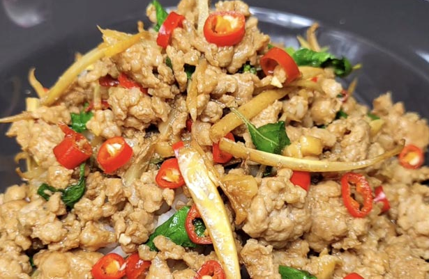

ผัดกะเพรา
เมนูผัดกะเพราราดข้าว เป็นอาหารตามสั่ง อาหารจานเดียว ที่หากินง่าย เราขอนำเสนอวิธีทำผัดกะเพราหมูสับใส่กระชายขาว ปรุงรสเผ็ดเค็มตามชอบ อร่อยเลิศ ก่อนไปเข้าครัวเรามาดูประโยชน์ของกระชายขาวกันหน่อยดีกว่า
ประโยชน์ของใบกะเพราและกระชายขาว
ใบกะเพรามีสรรพคุณขับลม แก้จุกเสียด แน่นท้อง ช่วยย่อยอาหาร แก้คลื่นเหียนอาเจียน ส่วนกระชายขาวมีสรรพคุณช่วยแก้อาการปวดท้อง มวนในท้อง ท้องอืด ท้องเฟ้อ ช่วยขับปัสสาวะ